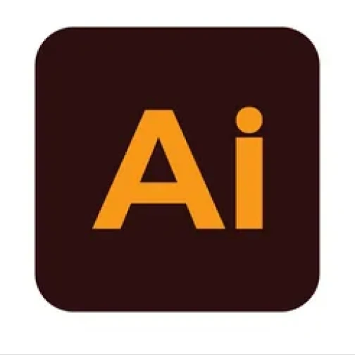
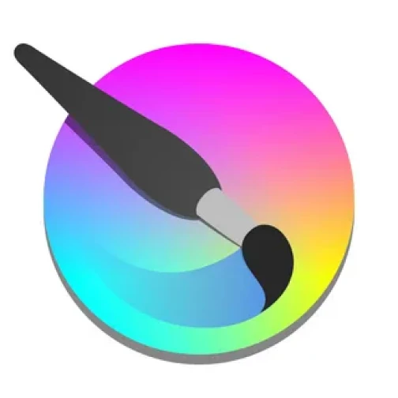
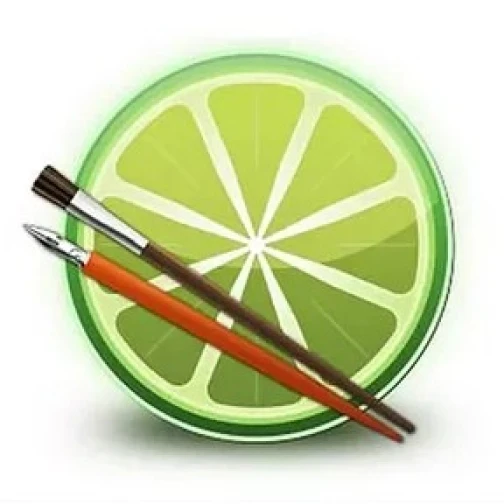
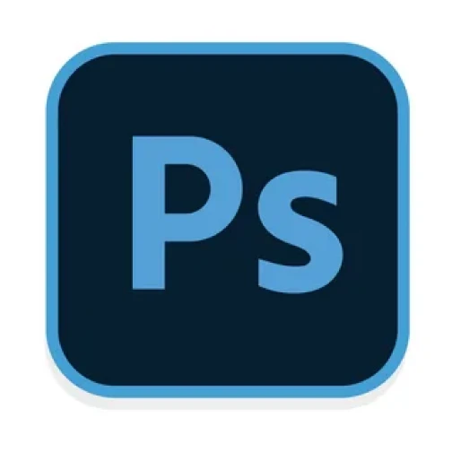
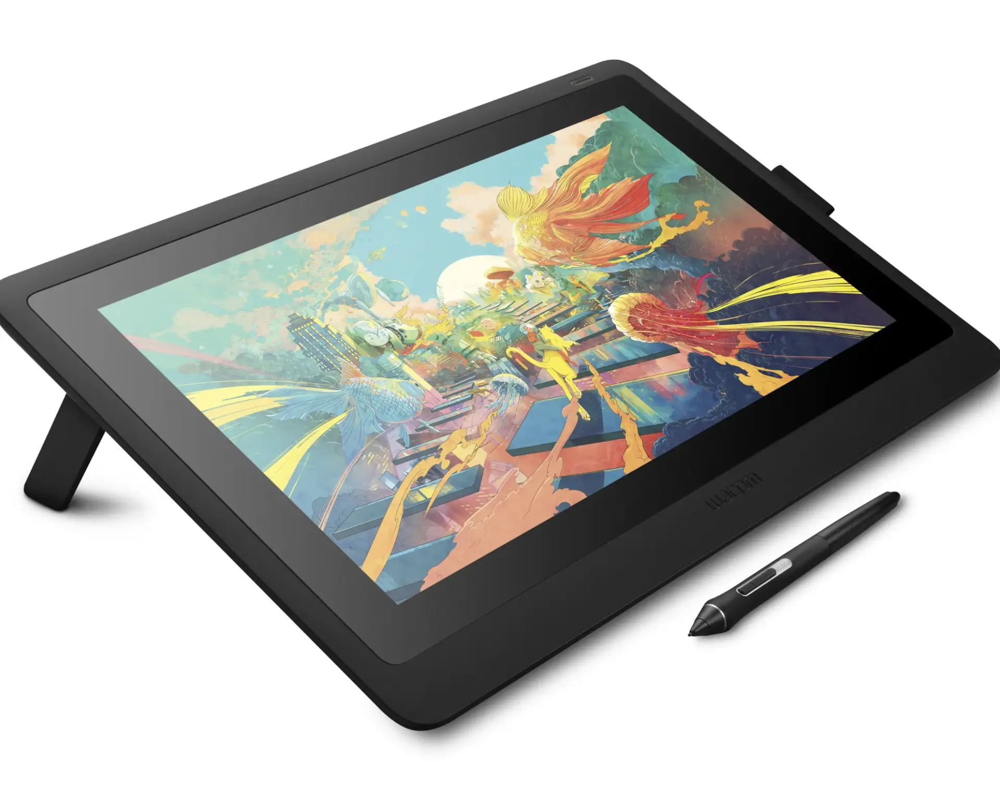
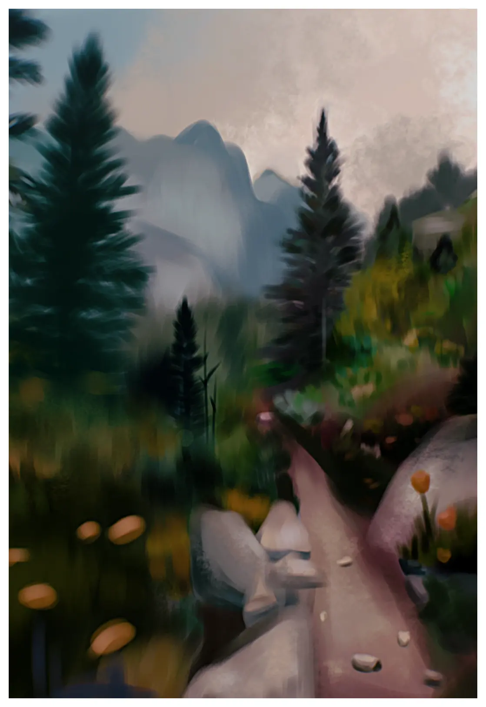
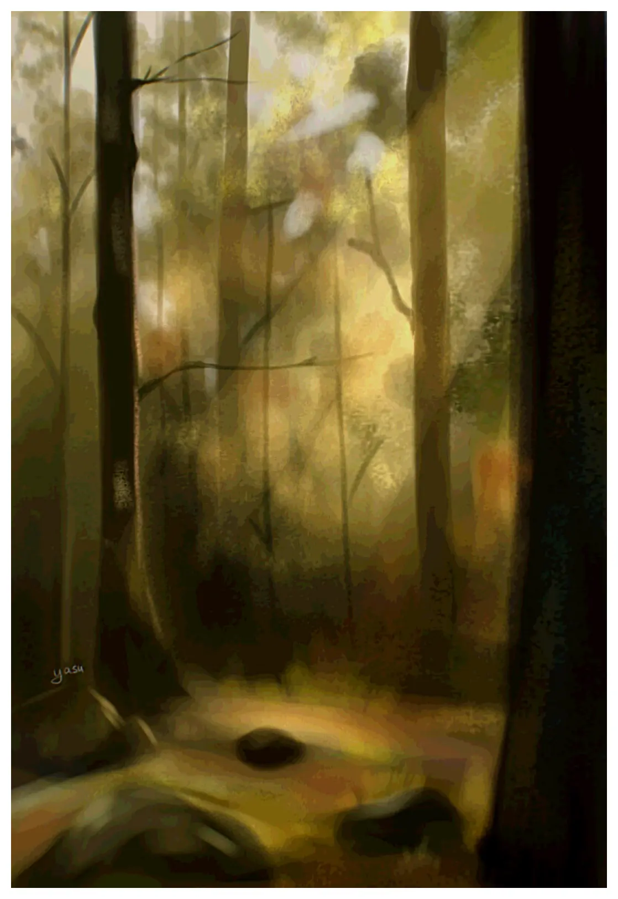

Работа в графических редакторах
Для создания иллюстраций мной используются такие программы как Krita, PaintTool SAI, Adobe Illustrator и Adobe Photoshop.
Я работаю в разных графических редакторах для большего функционала и возможностей.
Для создания иллюстраций мной используются такие программы как Krita, PaintTool SAI, Adobe Illustrator и Adobe Photoshop.
Я работаю в разных графических редакторах для большего функционала и возможностей.





В своих иллюстрациях я уделяю большое внимание колориту, который задает настроение всей работе. В этом разделе — работы с большей экспериментальностью и личным взглядом.

2021 г.

2021 г.